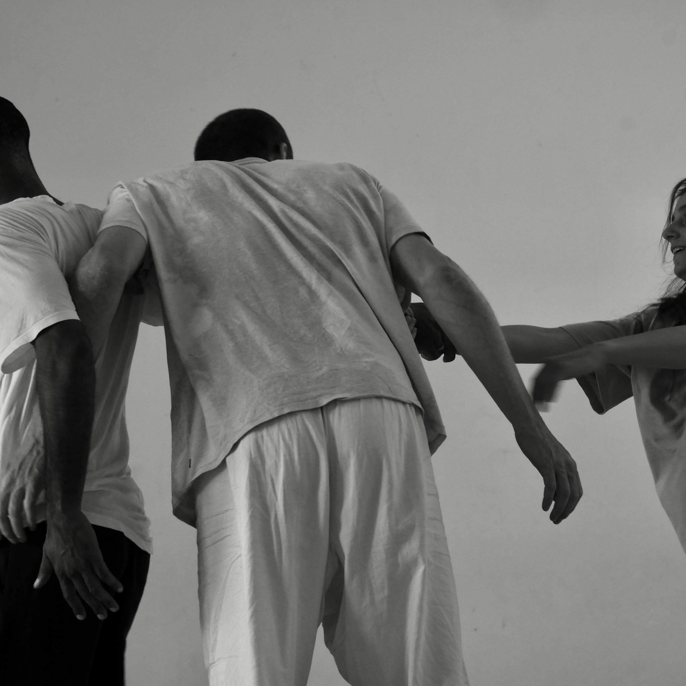

Dancer · Mad Person · Teacher
Movement,
presence,
connection.
A visual home for Yoad's dance practice, performances, workshops and events.
Calendar
Upcoming events
About
Yoad Lieder
Dancer, performer and teacher exploring movement, presence and connection.
Replace this with Yoad's biography, training, artistic background and approach to dance.
Selected work
Gallery
PHOTO 01
PHOTO 02
PHOTO 03
PHOTO 04
PHOTO 05
Practice
Dance · Improvisation · Teaching
Workshops, performances, movement research and shared practice.
Get in touch
Contact Yoad
For workshops, performances, collaborations and other enquiries.